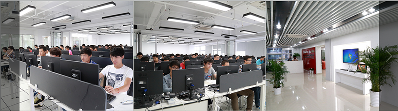
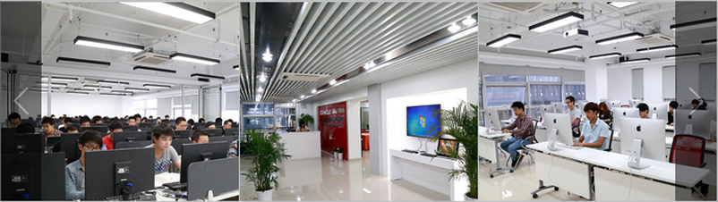

DESIGN
电商设计
在电商密集的江浙沪，电商设计人才的稀缺一直是所有电商企业法杖中的通，相对传统的平面设计，电商设计师的起薪也比较高。绿浪视觉作为深耕电商视觉行业多年的TOP级服务商，在杭州和嘉兴分别设计的培训事业部，开发了具有绿浪特色的视觉设计课程，将服务和实践的经验进行有效传导，切依靠海量的行业资源和客户基数打通了设计师-服务商-电商企业无缝的就业桥梁。

TRAIN
影视教育培训
绿浪视觉与中央创新建立长期战略合作已中央电视台、中国国际电视总公司为依托，培养影视技术人才，与中国电影电视技术学会共同开展学术交流及培训，开展各类影视教育课程。
